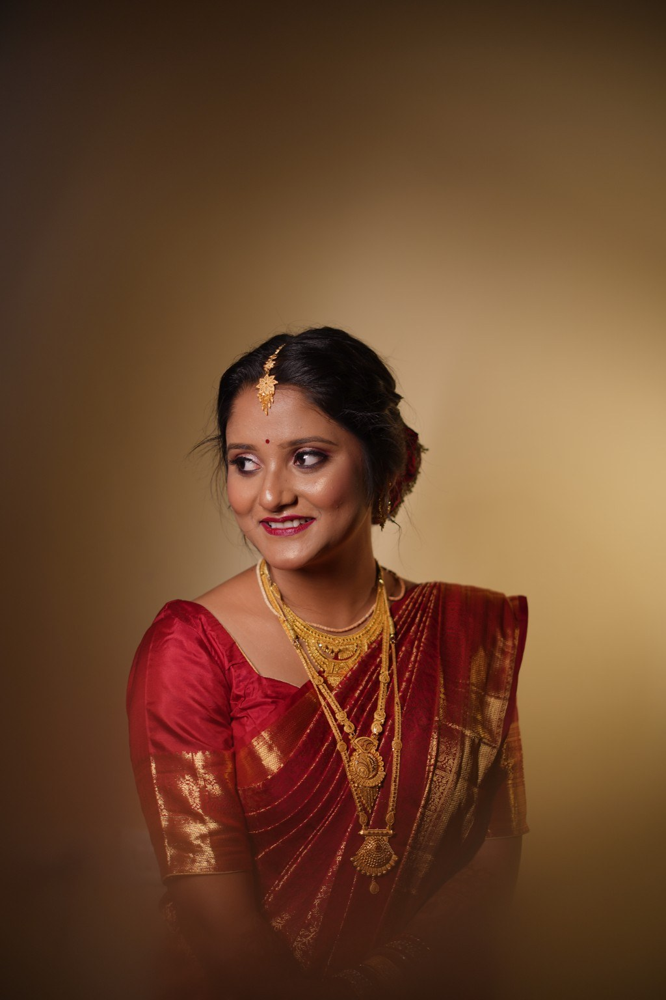
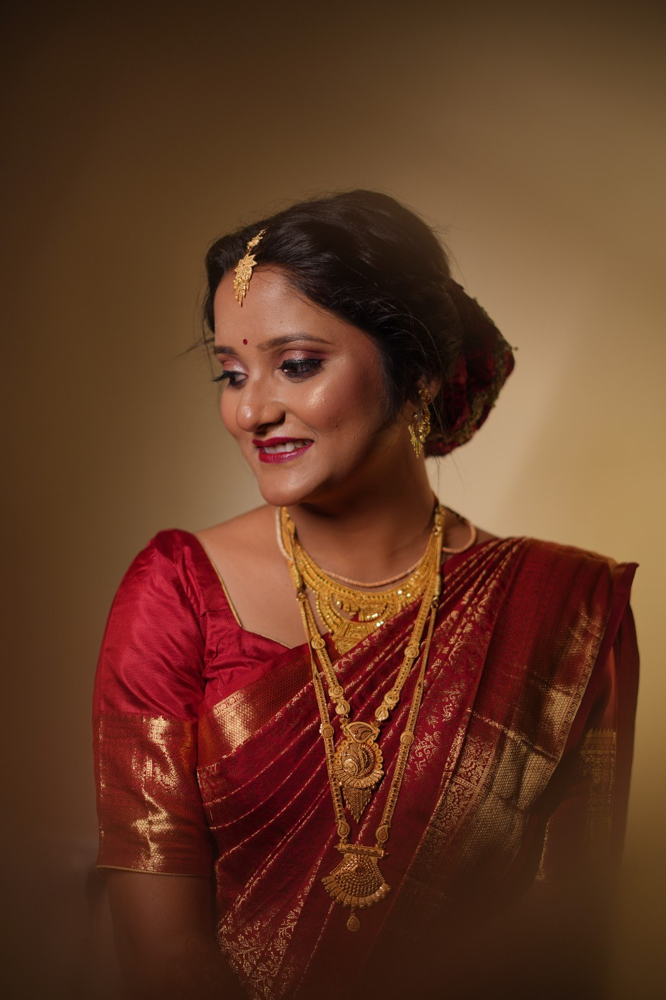
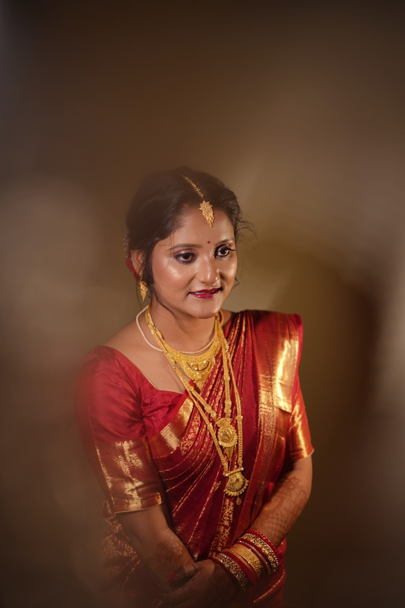
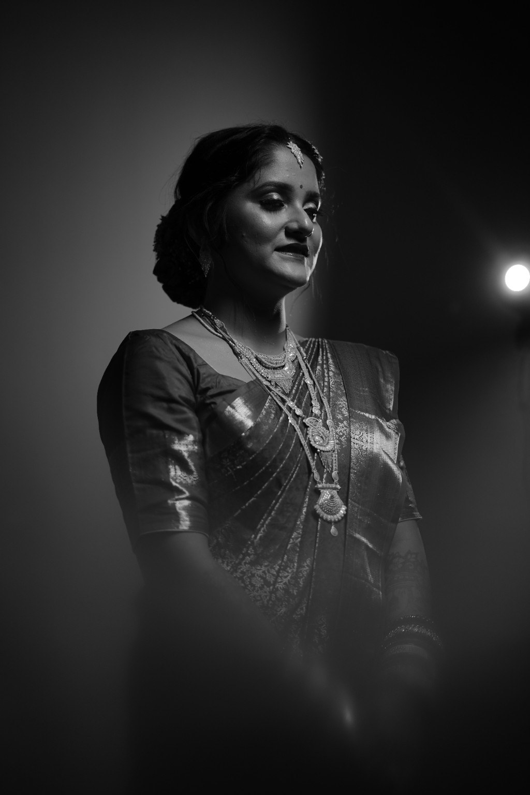
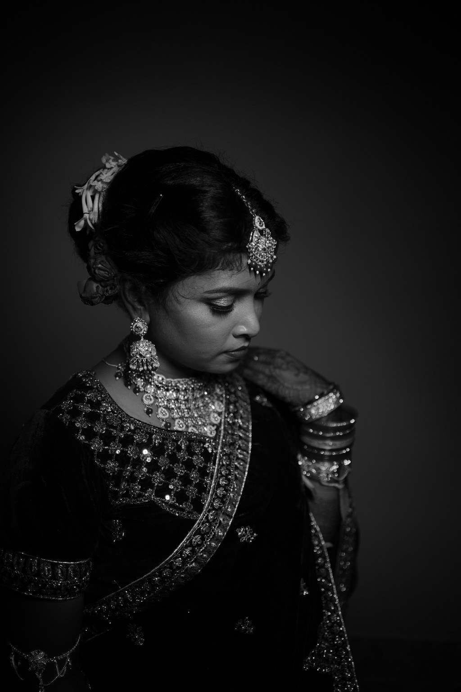
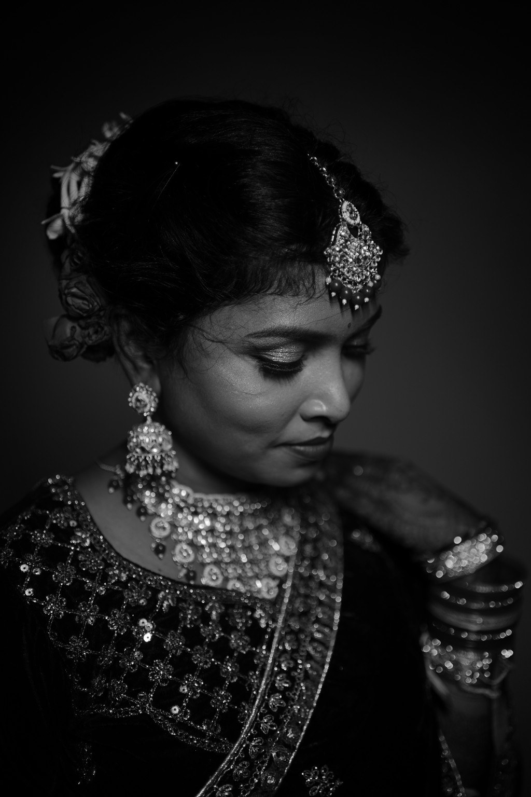
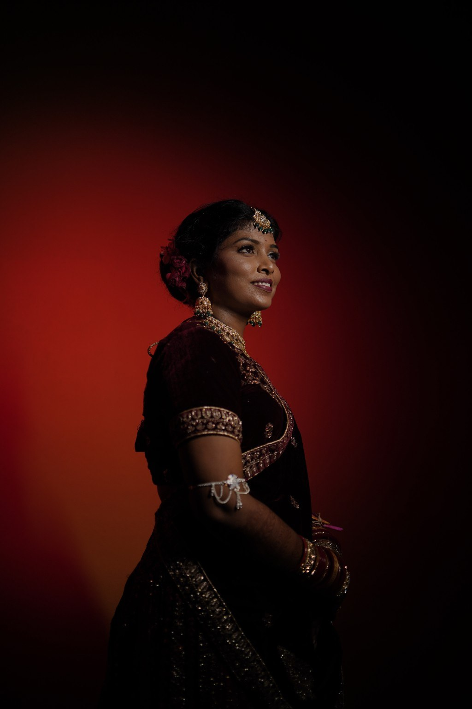
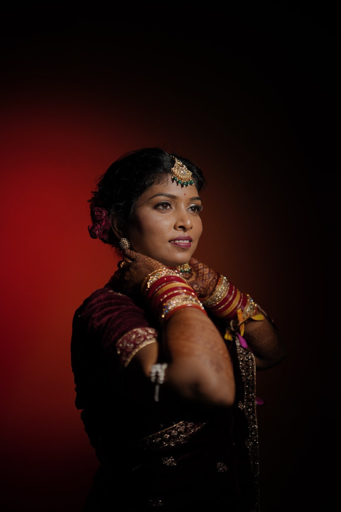
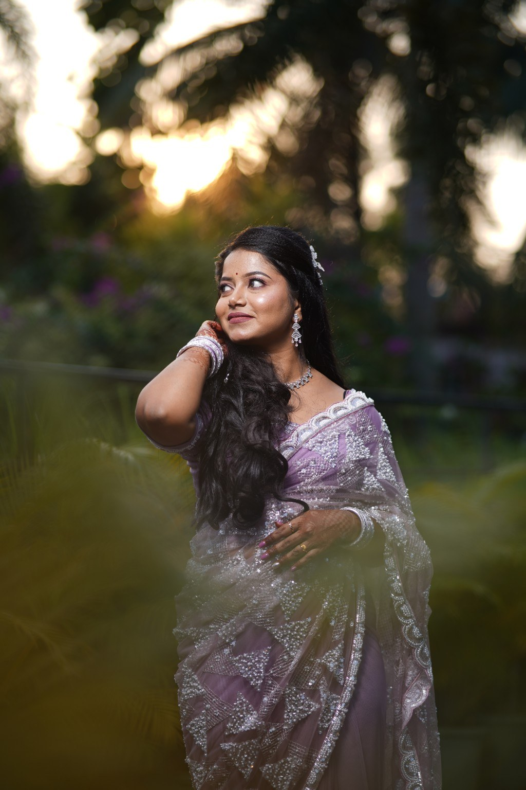
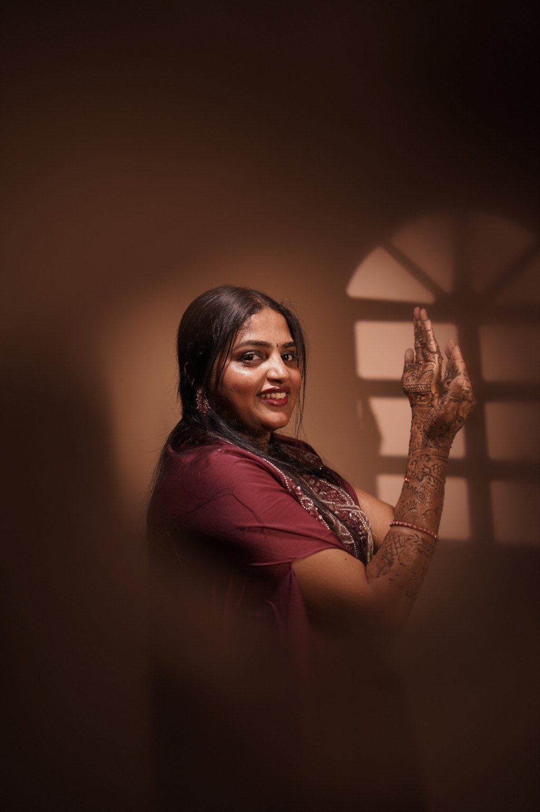

Video Editing
Rhythm, pacing and storytelling that bring the emotion of every moment to life.
I’m Jayadev — a video editor and colorist shaping real moments into cinematic stories. Thoughtful editing, expressive color and a deep love for wedding films.
Explore selected work ↗Wedding portraits and cinematic frames from the stories I’ve had the joy of working on.










Hello, I’m Jayadev Samantaray. I’m a video editor and colorist passionate about turning raw footage into films that feel personal, immersive and timeless.
I work with DaVinci Resolve and Adobe Premiere Pro, with a special focus on wedding storytelling and careful color grading. Having edited more than 1,000 wedding videos, I believe the smallest details often carry the biggest emotions.
Rhythm, pacing and storytelling that bring the emotion of every moment to life.
Building a consistent visual mood with thoughtful tones, contrast and natural skin color.
Shaping real celebrations into meaningful films worth revisiting.
For projects, collaborations and creative conversations.
Get in touch ↗